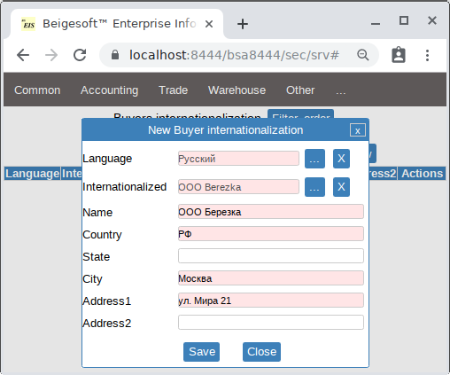
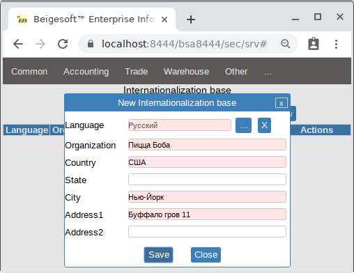
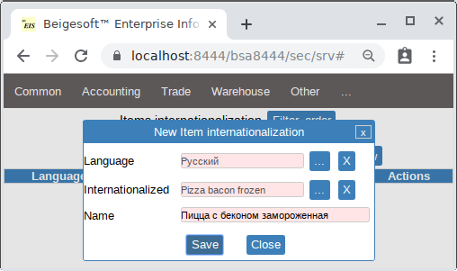
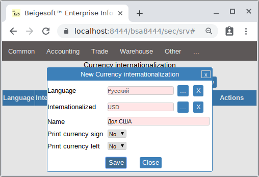
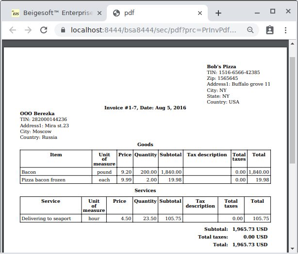
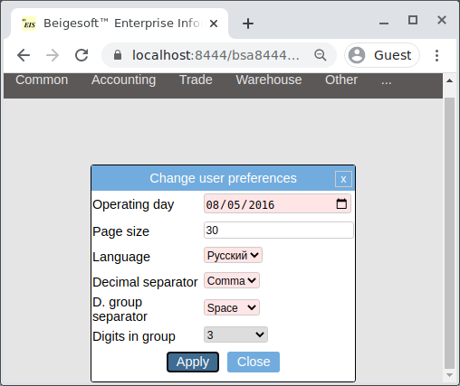
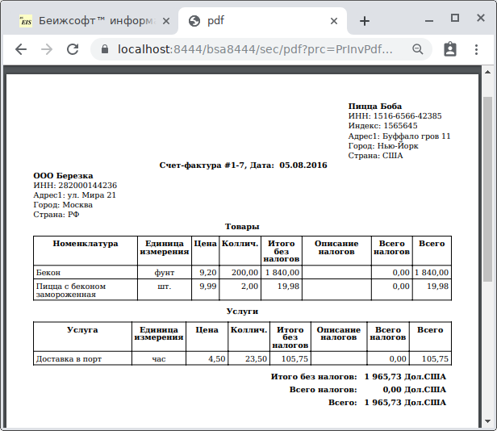

Overseas sales. Advanced internationalization.
Keywords: overseas sales.
Nowadays international trading is still a growing sphere of business. Even small business entities do overseas sales (export) or purchases (import).
Overseas buyer usually have not to pay foreign sales taxes. For example, foreigners travelers can refund sales taxes when they leave the country. You should set "Omit taxes" in an invoice for such customers/vendors.
Foreign buyers that buy goods for business purposes (e.g. for resale) usually must have a translated invoice. This is required by their tax authority. Beigesoft™ EIS has advanced dynamic internationalization to do it. This helps foreigner buyers and might attract more of them.
Making a sales invoice translated in a buyer's native language.
At first, add a foreign buyer, e.g. "OOO Berezka" from Russia, then add a "Buyer internationalization" for this buyer in Russian language:

Then add a new "Internationalization base" for business owner information in the Russian language:

Then add a new "goods/service/unit of measure internationalization" in the Russian language:

Then add a new "currency internationalization" for USD in the Russian language:

* You should restart the application after changing some internalization things such as "i.currency" or "i.base".
Finally just add a new invoice, the sample one's report in English is:

Set Russian language, digit separator "comma" and group separator "space" in the "Change language preferences":

Then print the sample invoice again in Russian:

How to add a new language without recompiling.
Beigesoft™ EIS uses TTF fonts DejaVuSerif-Bold.ttf and DejaVuSerif.ttf that contain many languages. For other languages you should add a TTF file into the Java archive file (see below). Asian free TTF fonts you can find in:
- Japanese VL-Gothic fonts - http://vlgothic.dicey.org
- Korean Nanum fonts - https://slackbuilds.org/repository/14.0/system/nanum-fonts-ttf/
- Chinese Han Sans - https://github.com/be5invis/source-han-sans-ttf/releases
Java files are placed in a JAR file, that is actually a ZIP archive. JAR, WAR and APK are ZIP archives. All you should do is:
- extract all files with folders (tree structure) from a JAR/WAR into a folder e.g. "foo"
- add a new basic static internationalization - i.e. a i18n.properties file, e.g. /resources/Messages_fr_FR.properties for France language, just copy the file Messages_en_US.properties into the new Messages_fr_FR-UTF8.properties, the edit it with an UTF-8 editor, then encode it into ASCII by this command: native2ascii -encoding UTF-8 Messages_fr_FR-UTF8.properties Messages_fr_FR.properties.
- add a language and a country codes into the langCountries in the web.xml, e.g. en,US,ru,RU,fr,FR
- remove digital signatures - e.g. foo/META-INF/BEIGESOF.RSA and BEIGESOF.SF
- if it's need, add new TTF fonts into the fonts folder
- make the JAR/WAR file by the jar utility, e.g. run outside of "foo" folder: "jar cvfm beige-eis.jar foo/META-INF/MANIFEST.MF -C foo/ ."
First, add a new "language", a "country" and a "language preferences", then push the "refresh languages settings", then refresh the page. Then add goods/services/etc. names in the new language.
To use another TTF file, set its name without extension in the "Accounting settings"-"TTF font", for example "VL-Gothic-Regular" (if there is no another Bold TTF, then leave that field "TTF font bold" empty!). Example of partially internationalized invoice with "VL-Gothic-Regular.ttf"
If you set the "Accounting settings"-"page size" to the "Letter", then you have to set the "page margins" and the "font size" in inches, otherwise (default A4) use millimeters. Default font size 3.5 millimeters equals 0.1378 inch.